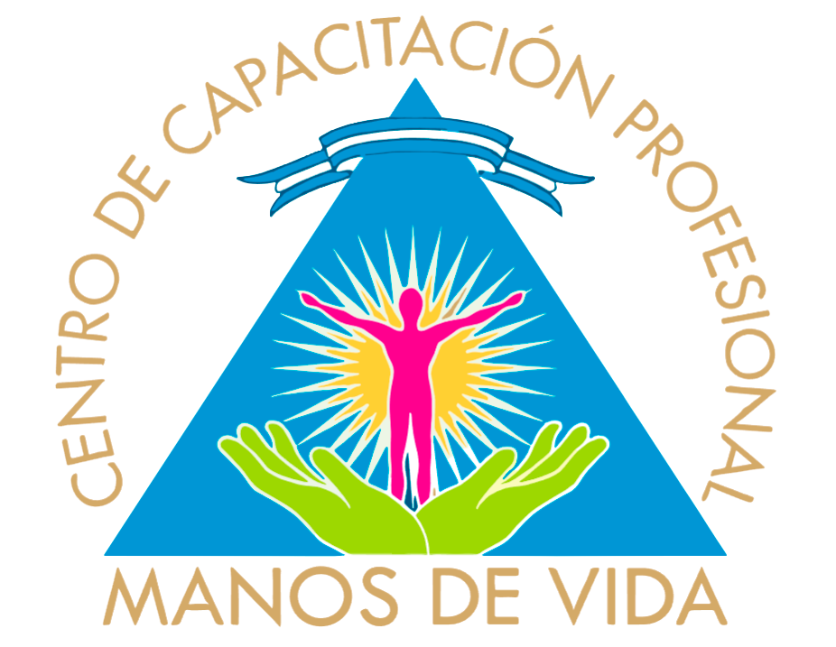

BIENVENIDOS
UN LUGAR DONDE SE ENSEÑA A HACER EL BIEN Y A HACERLO BIEN
DONDE IRSE SIN DOLOR ES POSIBLE.
Curos de capacitación online
Carreras - Cursos - Talleres
Atención en Consultorio
Especialista en Columna - Cervicales - Rodilla y Ciático
Magnetoterapia - Fibromialgia - Frtritis - Frtrosis - Osteoporosis - Escoliosis - Lumbalgia -
Hombro Doloroso - Hernias de Disco - Trocanteritis - Pre y Post Quirúrgicos
Nueva Dirección
Ayacucho 3702 - entre 14 de Julio y 20 de Septiembre
NUESTROS TALLERES Y CURSOS
Taller de Drenaje Linfático Pre y Post Quirúrgico para Masoterapeutas
Brindar a los masoterapeutas las habilidades y conocimientos necesarios para realizar drenajes linfáticos pre y post quirúrgicos de manera segura y efectiva.
Dirigido a:Masoterapeutas con experiencia previa en drenaje linfático
Contenido:- - Masoterapeuta certificado con más de 30 años de experiencia
- - Instructor de drenaje linfático pre y post quirúrgico
- - Especialista en terapia del dolor
Instructor: Esmeralda Da Silva
- - Masoterapeuta certificado con más de 30 años de experiencia
- - Instructor de drenaje linfático pre y post quirúrgico
- - Especialista en terapia del dolor
Duración: 16 horas
Incluye:- - Material teorico y practicas
- - Certificacion nacional e internacional
Inscripciones:
Taller de Masaje Tibetano
El masaje tibetano es una técnica de masaje antigua que se ha practicado en el Tíbet
durante siglos. Se cree que el masaje tibetano ayuda a equilibrar los tres doshas, o
energías vitales, del cuerpo: vata, pitta y kapha. También se cree que el masaje
tibetano ayuda a promover la relajación, reducir el estrés y mejorar la
circulación.
Este taller de masaje tibetano le enseñará los fundamentos del masaje tibetano,
incluidas las técnicas básicas de masaje, los puntos de presión y las secuencias de
masaje. También aprenderá sobre los beneficios del masaje tibetano y cómo puede usarlo
para ayudar a sus clientes a mejorar su salud y bienestar.
- - Introducción al masaje tibetano
- - Los tres doshas
- - Técnicas básicas de masaje tibetano
- - Puntos de presión
- - Secuencias de masaje
- - Beneficios del masaje tibetano
- - Cómo usar el masaje tibetano para ayudar a sus clientes
- - Masoterapeuta certificado con más de 30 años de experiencia
- - Instructor de drenaje linfático pre y post quirúrgico
- - Especialista en terapia del dolor
Requisitos previos: No hay requisitos previos para este taller
- - Masoterapeuta certificado con más de 30 años de experiencia
- - Instructor de drenaje linfático pre y post quirúrgico
- - Especialista en terapia del dolor
Duración: 8 horas
Instructor: Esmeralda Da Silva
Cómo inscribirse: Para inscribirse en este taller, póngase en contacto con nosotros en [...]
Taller de Masaje Prehispánico
Aprende las antiguas técnicas de masaje que han sido utilizadas por los pueblos indígenas de México durante siglos para promover la salud y el bienestar.
¿Qué es el masaje prehispánico?El masaje prehispánico es una forma de masaje tradicional que se originó en las culturas indígenas de México. Se basa en la creencia de que el cuerpo humano es un sistema energético que debe estar en equilibrio para mantener la salud. El masaje prehispánico utiliza una variedad de técnicas para manipular los músculos, los tejidos y los puntos de energía del cuerpo para promover la relajación, aliviar el dolor y mejorar la salud general.
Beneficios del masaje prehispánicoEl masaje prehispánico ofrece una serie de beneficios para la salud, que incluyen:
- - Alivio del dolor: el masaje prehispánico puede ayudar a aliviar el dolor muscular, articular y de espalda
- - Relajación: el masaje prehispánico puede ayudar a relajar los músculos y la mente, y reducir el estrés y la ansiedad
- - Mejora de la circulación: el masaje prehispánico puede ayudar a mejorar la circulación sanguínea y linfática, lo que puede ayudar a reducir la hinchazón y mejorar la salud general
- - Mejora del estado de ánimo: el masaje prehispánico puede ayudar a mejorar el estado de ánimo y reducir la depresión y la ansiedad
- - La historia y la filosofía del masaje prehispánico
- - Las diferentes técnicas de masaje prehispánico
- - Cómo adaptar el masaje prehispánico a las necesidades individuales de tus clientes
- - Cómo crear un ambiente relajante y seguro para tus clientes
Este curso está dirigido a cualquier persona interesada en aprender el masaje prehispánico. No se requiere experiencia previa en masaje
Cómo inscribirse: Para obtener más información y para inscribirte al taller, visita nuestra página web o contáctanos por teléfono al [...]
¡No pierdas esta oportunidad de aprender las antiguas técnicas de masaje prehispánico y llevar tus habilidades de masaje al siguiente nivel!
Taller de Cuidados Básicos de la Columna con Esferobalones
¡Mejora tu postura y alivia el dolor de espalda con nuestro taller de cuidados básicos de la columna con esferobalones!
¿Sufres de dolor de espalda, cuello o hombros? ¿Tienes una mala postura? Si es así, nuestro taller de cuidados básicos de la columna con esferobalones es perfecto para ti
En este taller aprenderás:- - Cómo utilizar los esferobalones para aliviar el dolor y mejorar la postura
- - Ejercicios específicos para fortalecer los músculos de la espalda y el cuello
- - Técnicas de estiramiento para mejorar la flexibilidad de la columna vertebral
- - Consejos para mantener una buena postura en el trabajo, en casa y durante el ejercicio
El masaje prehispánico ofrece una serie de beneficios para la salud, que incluyen:
- - Alivia el dolor de espalda, cuello y hombros
- - Mejora la postura
- - Fortalece los músculos de la espalda y el cuello
- - Mejora la flexibilidad de la columna vertebral
- - Reduce el riesgo de lesiones en la espalda
- - Mejora el equilibrio y la coordinación
- - Aumenta la energía y el bienestar general
Instructor: Laura Georgina Villalba
¡No te pierdas esta oportunidad de mejorar tu salud y bienestar!
¡Reserva tu plaza hoy mismo!
Contacto: [...]
Curso Técnico En Contactopraxia Con Especialidad En Dolor
Nuestro programa de Terapia del Dolor te brinda las herramientas y el apoyo necesarios para recuperar el control de tu vida.
¿Qué ofrecemos?- - Evaluación exhaustiva: Nuestros especialistas te brindarán una evaluación completa para identificar las causas de tu dolor y aprender un plan de tratamiento personalizado.
- - Técnicas innovadoras: Utilizamos las últimas técnicas y tecnologías para el manejo del dolor, incluyendo terapias intervencionistas, fisioterapia, aparatología, osteopatía y más
- - Educación y autogestión: Te enseñamos estrategias y herramientas para que puedas manejar tu dolor de forma efectiva en tu día a día
- - Educación y Formación: Teórica y práctica con certificación internacional
- - Técnicas de masaje seguras y efectivas para el embarazo
- - Cómo adaptar el masaje a tus necesidades individuales
- - Cómo incorporar el masaje en tu rutina de cuidado prenatal
- - Cómo comunicarte con tu pareja o masajista sobre tus preferencias
- - Cervicobraquialgia
- - Desbloqueo Cervical
- - Neuralgias De Cabeza Y Cuello
- - Dorsalgia
- - Columna Vertebral
- - Sacro Lumbociatalgia
- - Ciático
- - Trocanteritis Pubalgia
- - Miembros Superiores
- - Miembros Inferiores
- - Enfermedades Del Sistema Nervioso (Alzheimer, Parkinson, ACV)
- - Fibromalgia
Informes e inscripciones:
+549223 422 2339 / +549223 691 9910
Sesiones personales:
Manos de vida - Ayacucho 3702 - Mar del Plata
Curso BioNeuroDescodificacion Muscular: El Origen Del Sintoma
Descubre el Poder de la Sanación a través de la BioNeuroDescodificación Muscula
¿Sientes que tu cuerpo te habla a través de dolencias y malestares?Este curso te guiará para aprender a descifrar el lenguaje de tu cuerpo y comprender el origen emocional de tus síntomas físicos, especialmente los relacionados con el sistema muscular.
¿Qué es la BioNeuroDescodificación Muscular?La BioNeuroDescodificación es una disciplina que explora la conexión entre las emociones, el cerebro y el cuerpo. Este curso se enfoca en cómo las emociones no expresadas o reprimidas pueden manifestarse como tensiones, dolores o enfermedades en los músculos.
¿Qué Aprenderás en este Curso?- - Descodificar el Lenguaje del Cuerpo: Aprenderás a interpretar las señales que tu cuerpo te envía a través de contracturas, dolores musculares, debilidad y otros síntomas.
- - Identificar Emociones Asociadas a los Músculos: Descubrirás cómo emociones como el miedo, la ira, la tristeza o el estrés pueden afectar a músculos específicos.
- - Liberar Emociones Atrapadas: Aprenderás técnicas para liberar emociones reprimidas y sanar el origen emocional de tus dolencias musculares.
- - Restaurar el Equilibrio Cuerpo-Mente: Alcanzarás un estado de mayor bienestar físico y emocional al comprender y sanar la conexión entre tus emociones y tu cuerpo.
- - Personas que sufren de dolores musculares crónicos o recurrentes.
- - Terapeutas y profesionales de la salud que desean incorporar la BioNeuroDescodificación a su práctica.
- - Cualquier persona interesada en mejorar su salud y bienestar a través de la comprensión de la conexión cuerpo-mente.
- - Reducción del dolor muscular y mejora de la movilidad.
- - Mayor conciencia de tus emociones y cómo afectan a tu cuerpo.
- - Herramientas para gestionar el estrés y las emociones de manera saludable.
- - Mayor equilibrio y bienestar físico y emocional.
Duración: 3 años, al finalizar obtienes el certificado de Técnico en BioNeuroDescodificación Muscular
¡Inscríbete Ahora y Comienza tu Viaje hacia la Sanación Integral!
No esperes más para descubrir el poder de la BioNeuroDescodificación Muscular y
transformar tu vida.
Sesiones indiviuales de BioNeuroDescodificación Muscular de 2 Horas
¿Estás listo para descubrir el origen emocional de tus dolencias musculares y
sanar desde adentro?
Nuestras sesiones individuales de BioNeuroDescodificación Muscular de 2 horas te ofrecen
una experiencia personalizada y profunda para explorar la conexión entre tus emociones y
tu cuerpo.
- - Una evaluación inicial para comprender tu situación y objetivos.
- - Una exploración guiada de tus emociones y su relación con tus síntomas musculares.
- - Técnicas para liberar emociones atrapadas y sanar el origen emocional de tus dolencias.
- - Recomendaciones para integrar la BioNeuroDescodificación en tu vida diaria.
- - Reducción del dolor muscular y mejora de la movilidad.
- - Mayor conciencia de tus emociones y cómo afectan a tu cuerpo.
- - Herramientas para gestionar el estrés y las emociones de manera saludable.
- - Mayor equilibrio y bienestar físico y emocional.
Contáctanos al +549223 422 2339 o al +549223 691 9910 para programar tu sesión individual de BioNeuroDescodificación Muscular de 2 horas.
¡No esperes más para comenzar tu viaje hacia la sanación integral!